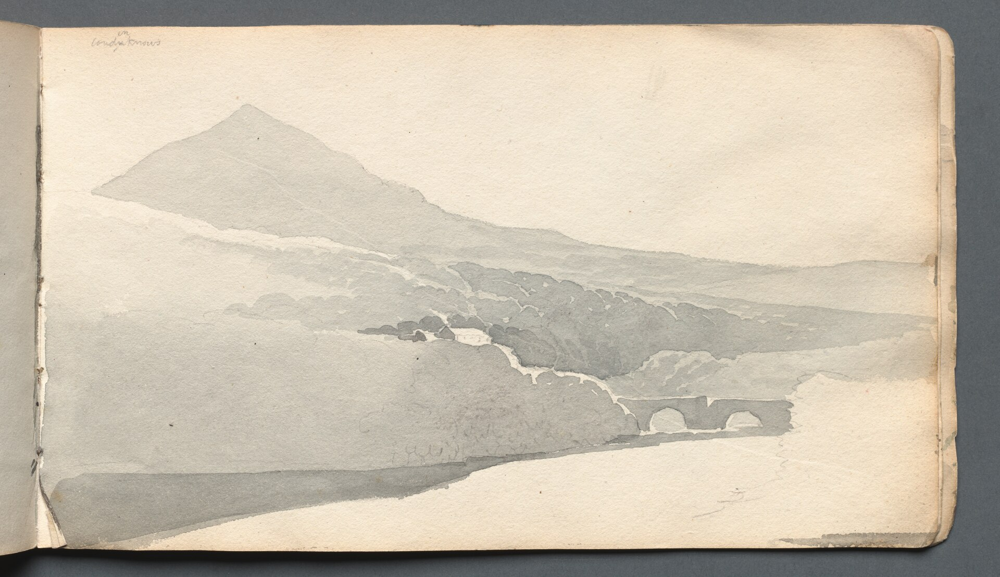
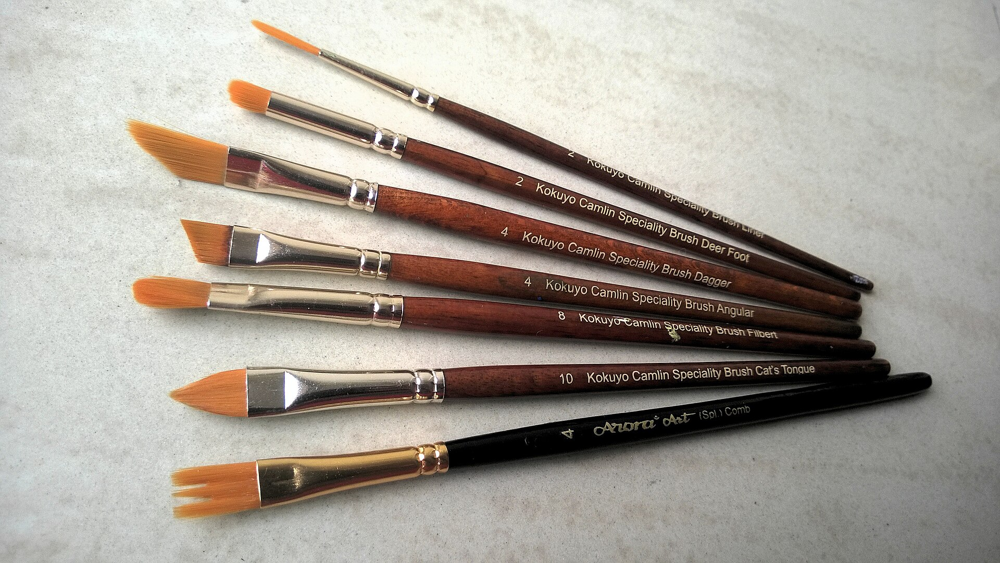
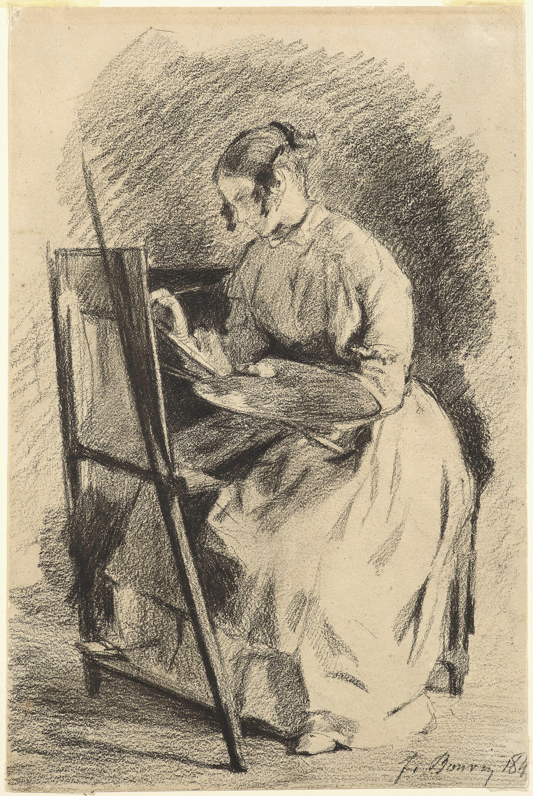

Malen in der kleinen Runde
Höchstens sechs Menschen am Tisch. So hat Inge Zeit für jedes Bild, und du hast Zeit für dich.

So laufen die vier Treffen
Zuerst schaust du.
Am ersten Abend zerlegst du ein Motiv in einfache Formen und lernst, Licht und Schatten zu sehen.
Dann mischst du Farbe.
Aus drei Grundfarben und Weiß entsteht deine eigene Palette.
Danach baust du dein Motiv.
Vom groben Untergrund zu den Details. Inge zeigt dir, wann du aufhörst.
Am Ende ist es fertig.
Am vierten Abend malst du zu Ende, und wir schauen alle Bilder gemeinsam an.
Vier Abende für 60 €
Pro Person, für alle vier Treffen à zwei Stunden in einer Gruppe von drei bis sechs. Material: inklusive oder eigenes, bitte klären.
Über Inge
- OrtKaiserslautern
- TechnikAquarell / Acryl?
- Erreichbarper E-Mail

Inge Kallenbach malt, seit sie denken kann, und gibt das am liebsten an Menschen weiter, die sagen: Ich kann das eigentlich gar nicht. In ihren Kursen gibt es kein Richtig und kein Falsch, nur Farbe, Wasser, Papier und zwei Stunden, in denen der Alltag draußen bleibt.Beispieltext. Inge erzählt hier selbst, wie sie zum Malen kam und was sie am Unterrichten liebt.
Am
Maltisch
Pinsel, Farbe, Papier: Das brauchst du, und dazu ein bisschen Mut.
Was du wissen willst
Brauche ich Vorkenntnisse?
Nein. Die Kurse sind für Anfängerinnen und Anfänger gemacht. Wer schon malt, bekommt von Inge eigene Aufgaben.
Was muss ich mitbringen?
Bitte klären: Ist das Grundmaterial im Preis enthalten? Kleidung, die Farbe abkann, ist immer gut.
Womit wird gemalt?
Bitte klären: Aquarell, Acryl oder beides? Inge stimmt die Technik auf die Gruppe ab.
Was, wenn sich nur zwei melden?
Ein Kurs startet ab drei Personen. Kommt die Gruppe nicht zusammen, sagt Inge rechtzeitig Bescheid und du zahlst nichts.
Ich verpasse ein Treffen. Und jetzt?
Sag Inge kurz Bescheid. Was du verpasst hast, holst du beim nächsten Treffen nach.
Wann ist der nächste Kurs?
Termine folgen. Schreib Inge, dann bekommst du Bescheid, sobald es losgeht.